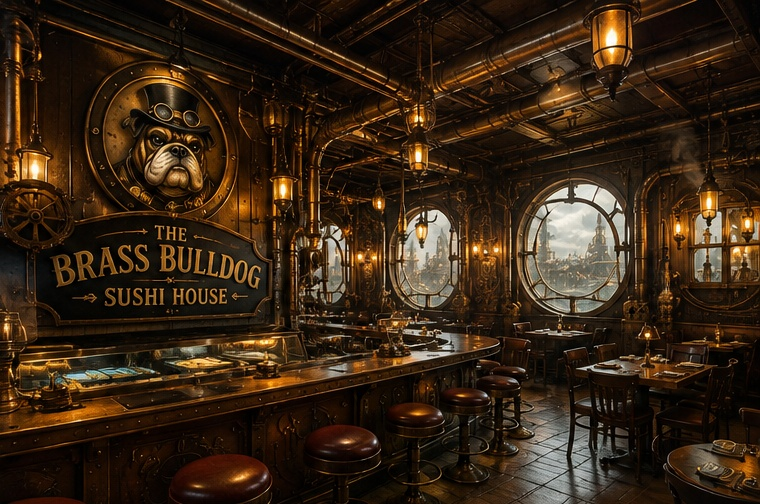

Fresh Ingredients
Our mechanical couriers deliver the freshest ingredients from across the empire every morning.
Precision-crafted sushi for bulldogs, humans, and travelers of the steam-powered skies.
View Our Menu
Located beneath the great copper airship docks, The Brass Bulldog Sushi House combines traditional Japanese cuisine with the bold engineering of a steam-powered world.
Our mechanical couriers deliver the freshest ingredients from across the empire every morning.
Every roll is carefully prepared with the precision of brass gears and master craftsmanship.
Bulldogs, humans, and every traveler of the steam-powered city are welcome at our table.

Enjoy your meal surrounded by copper pipes, polished brass, glowing lanterns, and the gentle rhythm of steam engines.
Whether you are stopping by after an airship voyage or enjoying an evening in the city, our kitchen is ready to serve you.
Request a Reservation